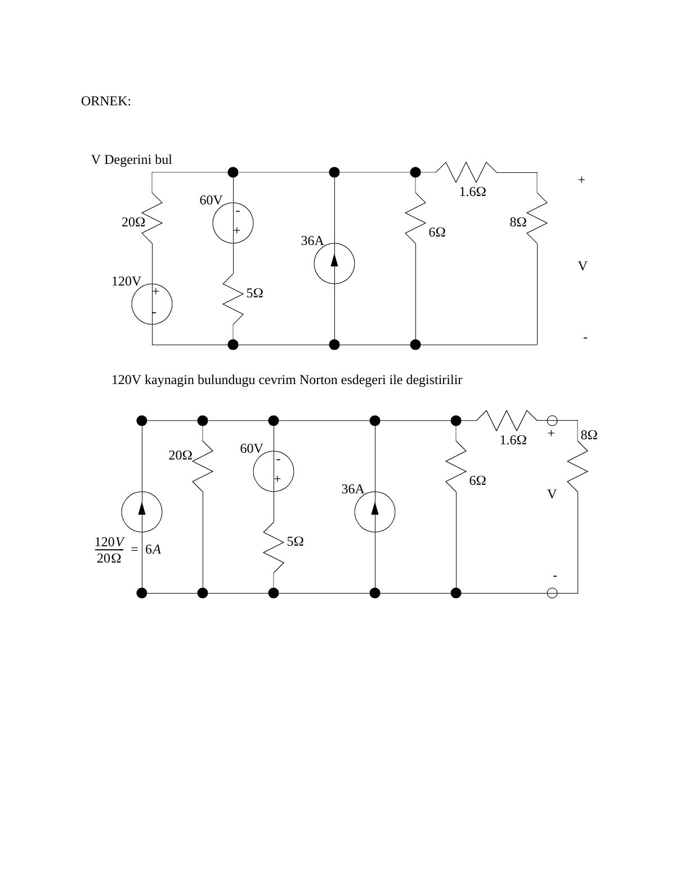

· EEM202
EEM202 Circuit Theory II: Circuit Solution Methods, Thevenin–Norton, Superposition and Maximum Power (Fatih Tüysüz)
EEM202 – Devre Teorisi II · 28.05.2007 · 16.10.2026
This post contains an 11-page note titled "Circuit Solution Methods", stored in the course folder under the name "sorular3" (the PDF is dated May 2007; the PDF metadata lists Fatih Tüysüz as the author). The worked examples in the second section contain references such as "Figure 7.3(c)" and "Figure 7.11(b)"; this part may have been compiled from a textbook. The note covers Thevenin–Norton equivalents, superposition, and maximum power transfer using DC circuits, and gives worked examples; it was placed in the folder for review because the same methods are used in the phasor circuits of EEM202. The text and results are reproduced below; the original PDF can be downloaded at the end of the post.
This content belongs to a third-party source; it is shared for archival and nostalgic purposes with the source credited. It will be removed at the request of the rights holder.
Using Thevenin and Norton equivalent circuits
Thevenin circuit: a source V_s with a series resistance R1. Norton circuit: a source I_s with a parallel resistance R2.
- If both circuits are short-circuited: I_t = I_n and V_t = V_n = 0 → V_s = R1·I_t, that is, V_s/R1 = I_t = I_n.
- If both circuits are open-circuited: V_t = V_n and I_t = I_n = 0 → V_t = V_s and V_n = I_s·R2.
These basic equalities are used both in solving circuits and in simplifying them.
Example: finding the voltage V by source transformations
The circuit contains a 120 V source with 20 Ω, a 60 V source with 5 Ω, a 36 A current source, 6 Ω, and then a series 1.6 Ω and an 8 Ω load; V across the 8 Ω resistor is required.

- The branch containing the 120 V source is replaced by its Norton equivalent: 120 V/20 Ω = 6 A.
- The second voltage source and its resistor are also converted to a Norton equivalent: 60 V/5 Ω = 12 A (in the opposite direction).
- All current sources and parallel resistors are combined: 6 − 12 + 36 = 30 A; 1/(1/20 + 1/5 + 1/6) = 2.4 Ω.
- The current source is converted to its Thevenin equivalent: 30 A·2.4 Ω = 72 V.
- The series resistors are added (2.4 + 1.6 = 4 Ω) and, using the voltage divider, V = 72·8/(8 + 4) = 48 V is obtained.
Superposition
This is a simple technique that can be used in circuits containing more than one source:
- Select one source in the circuit; replace all other current sources with open circuits and all other voltage sources with short circuits.
- Analyze the circuit like an ordinary circuit.
- Select the next source and return to the first step.
- Add the results obtained for each source.
Example
A 100 V source with 20 Ω and a 40 Ω resistor (V is across this resistor), 10 Ω and 2.5 Ω; a 6 A current source between the two nodes where the 20 Ω and 10 Ω meet.
- a) Current source only (voltage source short-circuited): 20 ∥ 40 = 13.3 Ω; 10 + 13.3 = 23.3 Ω in parallel with 2.5 Ω: 1/(1/2.5 + 1/23.3) = 2.26 Ω. The voltage across the current source is 6·2.26 ≈ 13.5 V; by the voltage divider, V = 13.5·13.3/(10 + 13.3) ≈ 7.73 V.
- b) Voltage source only (current source open-circuited): 40 ∥ (10 + 2.5) = 9.52 Ω; V = 100·9.52/(20 + 9.52) = 32.25 V.
- c) Total: V = 7.73 + 32.25 = 40 V
Note: In part (a) the note gives "V_s = 6(2.2) = 7.73 V" and "V = 13.5 V"; the two values are mixed up. The correct values are V_s = 6·2.26 ≈ 13.5 V and V ≈ 7.73 V (the final total of 40 V is correct). In part (b) the note says "the current source is short-circuited"; according to the rule of the method, and as seen in the figure, the current source is open-circuited.
Maximum power transfer
When a load is connected to a circuit, the aim is to maximize the power delivered. With V_s and R_s belonging to the source:
- I = V_s/(R_s + R_L), V_L = I·R_L
- P_L = I·V_L = [V_s/(R_s + R_L)]²·R_L
- ∂P_L/∂R_L = 0 → R_L = R_s (for maximum power transfer)
Worked examples
Problem 1: R3 current (superposition)
Two sources U1 = 20 V and U2 = 15 V, R1 = R2 = 1 kΩ, R3 = 2.2 kΩ. The current through R3 is found by superposition.
- U1 only: R_T1 = R1 + R2∥R3 = 1 kΩ + (1 kΩ·2.2 kΩ)/3.2 kΩ = 1.69 kΩ; I_T1 = 20 V/1.69 kΩ = 11.8 mA; by the current divider, I_3(1) = (1 kΩ/3.2 kΩ)·11.8 mA = 3.69 mA
- U2 only: R_T2 = R2 + R1∥R3 = 1.69 kΩ; I_T2 = 15 V/1.69 kΩ = 8.88 mA; I_3(2) = (1 kΩ/3.2 kΩ)·8.88 mA = 2.78 mA (in the opposite direction)
- I_3 = 3.69 − 2.78 = 0.91 mA (910 µA); the positive result shows that the current flows in the direction driven by U1.
Problem 2: Current through the 8.65 Ω resistor (Thevenin)
A 20 V source with 5 Ω and 15 Ω; a 10 V source with 2 Ω and 8 Ω; an 8.65 Ω resistor between nodes A and B of the two sides.
- The resistor whose current is sought is removed, and its terminals are labeled A and B. By the voltage divider, U_A = 15/(5 + 15)·20 = 15 V, U_B = 8/(8 + 2)·10 = 8 V → U_TH = U_A − U_B = 7 V
- R_TH = 5∥15 + 2∥8 = 3.75 + 1.6 = 5.35 Ω
- I = 7 V/(5.35 Ω + 8.65 Ω) = 0.5 A
Downloadable file
The original 11-page PDF can be downloaded below.